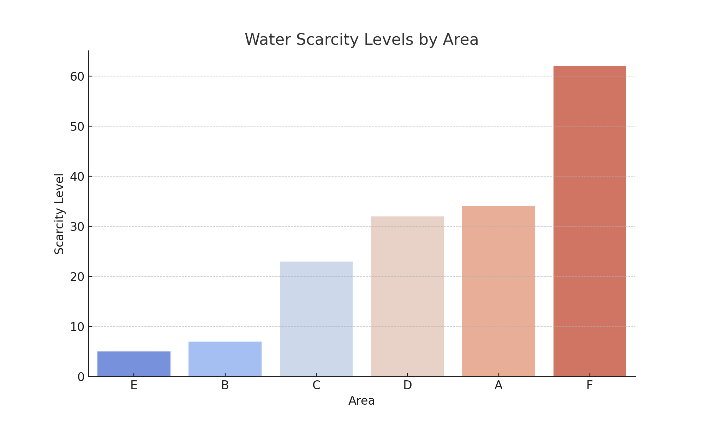

Your Role: Ranking Areas by Water Scarcity
In this section, we rank urban areas based on water scarcity to help prioritize water distribution and optimize resource allocation. The Merge Sort algorithm has been applied to ensure an efficient and stable ranking system.
Algorithm: Merge Sort
We selected the Merge Sort algorithm for its time complexity (O(n log n)) and efficiency in sorting large datasets.
Steps:
- Divide the dataset into smaller subsets.
- Sort each subset recursively.
- Merge the sorted subsets to get the final sorted list.
Results and Analysis
Here are the visualizations representing the water scarcity levels in urban areas after applying Merge Sort.
Bar Chart: Water Scarcity Levels by Area
Heatmap: Water Scarcity Levels
Conclusion
The Merge Sort algorithm provides an efficient solution for ranking areas by water scarcity, which can assist in prioritizing resource allocation and decision-making.